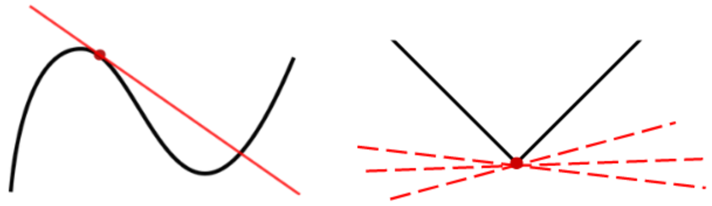
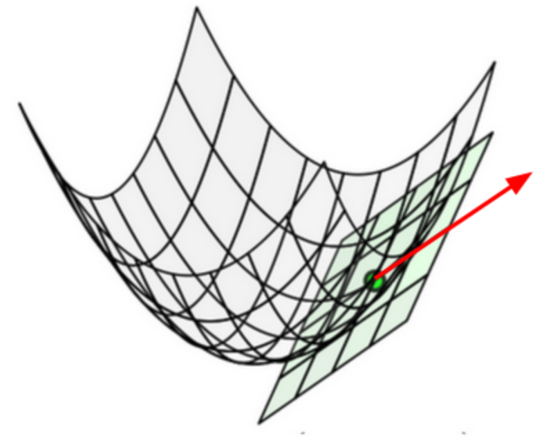
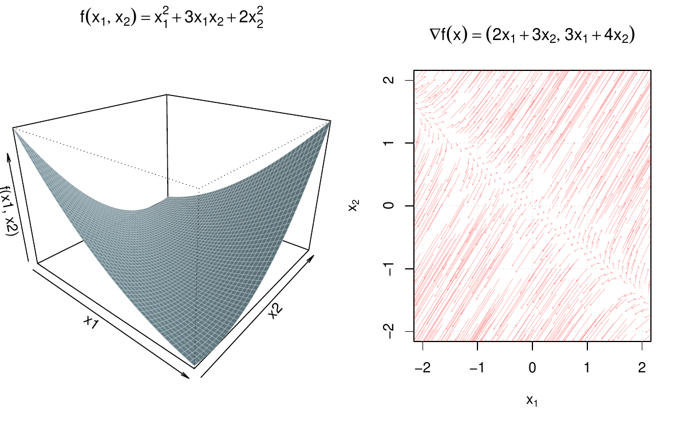
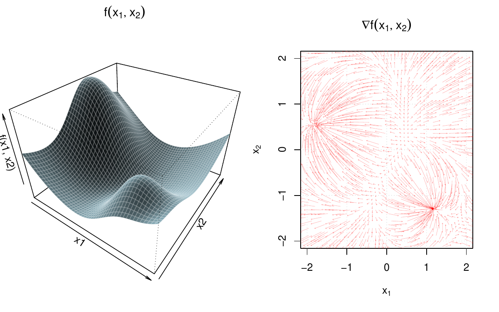
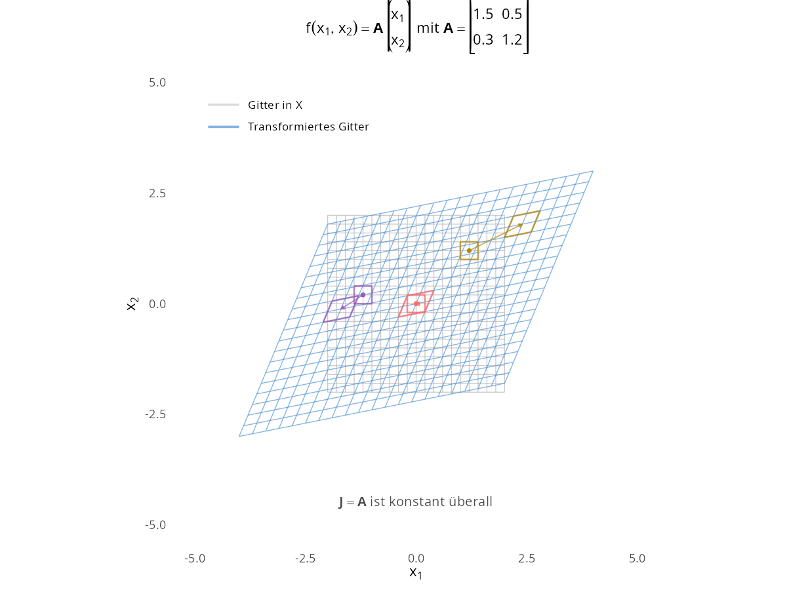
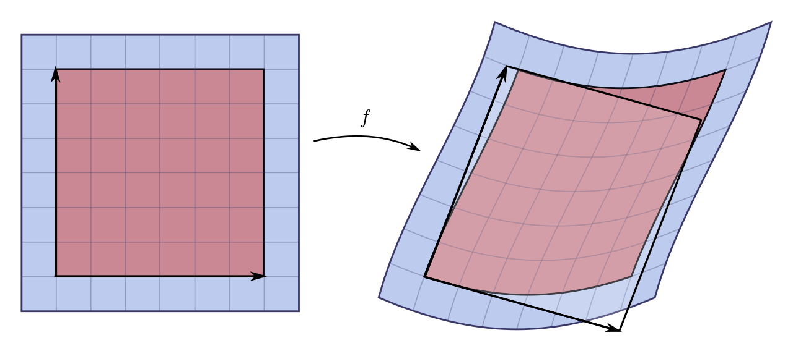
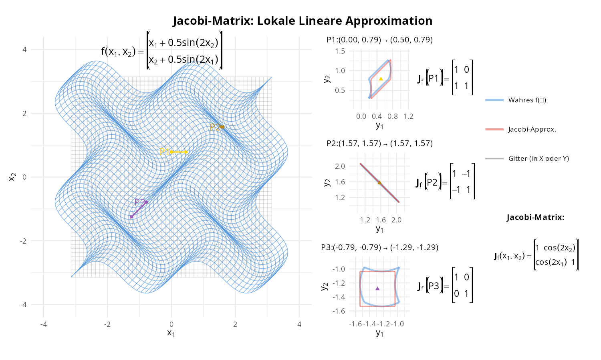

Fortgeschrittene mathematische Methoden in der Statistik
fabian.scheipl@lmu.de)\[ \definecolor{fmmgreen}{RGB}{0,158,115} \definecolor{fmmblue}{RGB}{0,114,178} \definecolor{fmmred}{RGB}{213,94,0} \definecolor{fmmorange}{RGB}{230,159,0} \definecolor{fmmpurple}{RGB}{158,87,213} \newcommand{\ind}{\unicode{x1D7D9}} \newcommand{\R}{{\mathbb{R}}} \newcommand{\N}{{\mathbb{N}}} \newcommand{\Q}{{\mathbb{Q}}} \newcommand{\C}{\mathbb{C}} \newcommand{\P}{\mathbb{P}} \newcommand{\Z}{{\mathbb{Z}}} \newcommand{\E}{{\mathbb{E}}} \newcommand{\K}{{\mathbb{K}}} \newcommand{\L}{\mathbb{L}} \newcommand{\F}{{\mathbb{F}}} \newcommand{\G}{\mathbb{G}} \newcommand{\S}{\mathbb{S}} \newcommand{\D}{{\mathbb{D}}} \newcommand{\bnull}{{\boldsymbol{0}}} \newcommand{\bzero}{{\boldsymbol{0}}} \newcommand{\ba}{{\boldsymbol{a}}} \newcommand{\bb}{{\boldsymbol{b}}} \newcommand{\bc}{{\boldsymbol{c}}} \newcommand{\bd}{{\boldsymbol{d}}} \newcommand{\be}{{\boldsymbol{e}}} \newcommand{\bg}{{\boldsymbol{g}}} \newcommand{\bh}{{\boldsymbol{h}}} \newcommand{\bi}{{\boldsymbol{i}}} \newcommand{\bj}{{\boldsymbol{j}}} \newcommand{\bk}{{\boldsymbol{k}}} \newcommand{\bl}{{\boldsymbol{l}}} \newcommand{\bn}{{\boldsymbol{n}}} \newcommand{\bo}{{\boldsymbol{o}}} \newcommand{\bp}{{\boldsymbol{p}}} \newcommand{\bq}{{\boldsymbol{q}}} \newcommand{\br}{{\boldsymbol{r}}} \newcommand{\bs}{{\boldsymbol{s}}} \newcommand{\bt}{{\boldsymbol{t}}} \newcommand{\bu}{{\boldsymbol{u}}} \newcommand{\bv}{{\boldsymbol{v}}} \newcommand{\bw}{{\boldsymbol{w}}} \newcommand{\bx}{{\boldsymbol{x}}} \newcommand{\by}{{\boldsymbol{y}}} \newcommand{\bz}{{\boldsymbol{z}}} \newcommand{\bA}{{\boldsymbol{A}}} \newcommand{\bB}{{\boldsymbol{B}}} \newcommand{\bC}{{\boldsymbol{C}}} \newcommand{\bD}{{\boldsymbol{D}}} \newcommand{\bE}{{\boldsymbol{E}}} \newcommand{\bF}{{\boldsymbol{F}}} \newcommand{\bG}{{\boldsymbol{G}}} \newcommand{\bH}{{\boldsymbol{H}}} \newcommand{\bI}{{\boldsymbol{I}}} \newcommand{\bJ}{{\boldsymbol{J}}} \newcommand{\bK}{{\boldsymbol{K}}} \newcommand{\bL}{{\boldsymbol{L}}} \newcommand{\bM}{{\boldsymbol{M}}} \newcommand{\bN}{{\boldsymbol{N}}} \newcommand{\bO}{{\boldsymbol{O}}} \newcommand{\bP}{{\boldsymbol{P}}} \newcommand{\bQ}{{\boldsymbol{Q}}} \newcommand{\bR}{{\boldsymbol{R}}} \newcommand{\bS}{{\boldsymbol{S}}} \newcommand{\bT}{{\boldsymbol{T}}} \newcommand{\bU}{{\boldsymbol{U}}} \newcommand{\bV}{{\boldsymbol{V}}} \newcommand{\bW}{{\boldsymbol{W}}} \newcommand{\bX}{{\boldsymbol{X}}} \newcommand{\bY}{{\boldsymbol{Y}}} \newcommand{\bZ}{{\boldsymbol{Z}}} \newcommand{\tagqed}{\tag*{$\blacksquare$}} \newcommand{\Acal}{{\mathcal{A}}} \newcommand{\Bcal}{{\mathcal{B}}} \newcommand{\Ccal}{{\mathcal{C}}} \newcommand{\Dcal}{{\mathcal{D}}} \newcommand{\Ecal}{{\mathcal{E}}} \newcommand{\Fcal}{{\mathcal{F}}} \newcommand{\Gcal}{{\mathcal{G}}} \newcommand{\Hcal}{{\mathcal{H}}} \newcommand{\Ical}{{\mathcal{I}}} \newcommand{\Jcal}{{\mathcal{J}}} \newcommand{\Kcal}{{\mathcal{K}}} \newcommand{\Lcal}{{\mathcal{L}}} \newcommand{\Mcal}{{\mathcal{M}}} \newcommand{\Ncal}{{\mathcal{N}}} \newcommand{\Ocal}{{\mathcal{O}}} \newcommand{\Pcal}{{\mathcal{P}}} \newcommand{\Qcal}{{\mathcal{Q}}} \newcommand{\Rcal}{{\mathcal{R}}} \newcommand{\Scal}{{\mathcal{S}}} \newcommand{\Tcal}{{\mathcal{T}}} \newcommand{\Ucal}{{\mathcal{U}}} \newcommand{\Vcal}{{\mathcal{V}}} \newcommand{\Wcal}{{\mathcal{W}}} \newcommand{\Xcal}{{\mathcal{X}}} \newcommand{\Ycal}{{\mathcal{Y}}} \newcommand{\Zcal}{{\mathcal{Z}}} \newcommand{\eps}{{\varepsilon}} \newcommand{\beps}{{\boldsymbol{\epsilon}}} \newcommand{\balpha}{{\boldsymbol{\alpha}}} \newcommand{\bbeta}{{\boldsymbol{\beta}}} \newcommand{\bchi}{{\boldsymbol{\chi}}} \newcommand{\bdelta}{{\boldsymbol{\delta}}} \newcommand{\bDelta}{{\boldsymbol{\Delta}}} \newcommand{\bepsilon}{{\boldsymbol{\epsilon}}} \newcommand{\bphi}{{\boldsymbol{\phi}}} \newcommand{\bgamma}{{\boldsymbol{\gamma}}} \newcommand{\betah}{{\boldsymbol{\eta}}} \newcommand{\btheta}{{\boldsymbol{\theta}}} \newcommand{\biota}{{\boldsymbol{\iota}}} \newcommand{\bkappa}{{\boldsymbol{\kappa}}} \newcommand{\blambda}{{\boldsymbol{\lambda}}} \newcommand{\bLambda}{{\boldsymbol{\Lambda}}} \newcommand{\bmu}{{\boldsymbol{\mu}}} \newcommand{\bnu}{{\boldsymbol{\nu}}} \newcommand{\bomikron}{{\boldsymbol{\omicron}}} \newcommand{\bpi}{{\boldsymbol{\pi}}} \newcommand{\bSigma}{{\boldsymbol{\Sigma}}} \newcommand{\bxi}{{\boldsymbol{\xi}}} \newcommand{\bzeta}{{\boldsymbol{\zeta}}} \newcommand{\bomega}{{\boldsymbol{\omega}}} \newcommand{\equivto}{{\Leftrightarrow}} \newcommand{\quequiv}{{\quad \equivto \quad}} \newcommand{\impl}{{\implies}} \newcommand{\quimpl}{{\quad \implies \quad}} \newcommand{\implby}{{\impliedby}} \newcommand{\notimplies}{\not\implies} \newcommand{\tr}{{\operatorname{tr}}} \newcommand{\spann}{{\operatorname{span}}} \newcommand{\col}{{\operatorname{col}}} \newcommand{\rang}{{\operatorname{rang}}} \newcommand{\diag}{{\operatorname{diag}}} \newcommand{\vec}{\operatorname{vec}} \newcommand{\pinv}{{^{+}}} \newcommand{\kron}{\mathbin{\otimes_{\mathrm{K}}}} \newcommand{\sign}{{\operatorname{sign}}} \newcommand{\la}{{\langle}} \newcommand{\ra}{{\rangle}} \newcommand{\inner}[1]{{\langle #1 \rangle}} \newcommand{\proj}{{\operatorname{proj}}} \newcommand{\bar}{\overline} \newcommand{\vol}{{\operatorname{vol}}} \newcommand{\dx}{{\, \mathrm{d}x}} \newcommand{\ol}{{\overline}} \newcommand{\argmax}{\mathop{\mathrm{arg\,max}}} \newcommand{\argmin}{\mathop{\mathrm{arg\,min}}} \newcommand{\conv}{\mathop{\mathrm{conv}}} \newcommand{\epi}{\mathop{\mathrm{epi}}} \newcommand{\interior}{\mathop{\mathrm{int}}} \newcommand{\Pr}{\mathbb{P}} \newcommand{\var}{{\mathbb{V}\mathrm{ar}}} \newcommand{\bias}{{\operatorname{bias}}} \newcommand{\abias}{{\mathrm{ABias}}} \newcommand{\AMSE}{{\mathrm{AMSE}}} \newcommand{\AMISE}{{\mathrm{AMISE}}} \newcommand{\cov}{{\mathbb{C}\mathrm{ov}}} \newcommand{\corr}{{\mathrm{Corr}}} \newcommand{\ov}{{\overline}} \newcommand{\wh}[1]{{\widehat{#1}}} \newcommand{\wt}[1]{{\widetilde{#1}}} \newcommand{\tod}{{\stackrel{d}{\to}}} \newcommand{\sumin}{{\sum_{i = 1}^n}} \newcommand{\sumjn}{{\sum_{j = 1}^n}} \newcommand{\KL}{{\operatorname{KL}}} \newcommand{\softmax}{{\operatorname{SoftMax}}} \newcommand{\layernorm}{{\operatorname{LayerNorm}}} \newcommand{\avg}{{\operatorname{avg}}} \newcommand{\relu}{{\operatorname{ReLu}}} \newcommand{\VC}{{\operatorname{VC}}} \newcommand{\indep}{{\perp \!\!\! \perp}} \newcommand{\unif}{{\operatorname{Unif}}} \newcommand{\bern}{{\operatorname{Bernoulli}}} \newcommand{\binomial}{{\operatorname{Binomial}}} \newcommand{\MSE}{{\operatorname{MSE}}} \newcommand{\iid}{\textit{iid}\;} \newcommand{\IF}{{\operatorname{IF} }} \newcommand{\BIC}{{\operatorname{BIC}}} \newcommand{\AIC}{{\operatorname{AIC}}} \newcommand{\IC}{{\operatorname{IC}}} \newcommand{\expl}[1]{{\tag*{[#1]}}} \newcommand{\cb}[1]{\textbf{#1}} \newcommand{\cbgreen}[1]{\textcolor{fmmgreen}{\textbf{#1}}} \newcommand{\cbred}[1]{\textcolor{fmmred}{\textbf{#1}}} \newcommand{\cbpurp}[1]{\textcolor{fmmpurple}{\textbf{#1}}} \newcommand{\cborange}[1]{\textcolor{fmmorange}{\textbf{#1}}} \newcommand{\corange}[1]{{\textcolor{fmmorange}{#1}}} \newcommand{\cblue}[1]{{\textcolor{fmmblue}{#1}}} \newcommand{\cgreen}[1]{{\textcolor{fmmgreen}{#1}}} \newcommand{\cred}[1]{{\textcolor{fmmred}{#1}}} \newcommand{\cpurp}[1]{{\textcolor{fmmpurple}{#1}}} \newcommand{\symbf}[1]{\boldsymbol{#1}} \]
Frage 1: Seien \(g, h \colon \R \to \R\) differenzierbar. Welche Rechenregeln stimmen?
Frage 2: Welche der folgenden Abbildungen sind linear?
Def.: Differenzierbarkeit
Sei \(S \subseteq \R\) offen und \(f\colon S \to \R\) eine Funktion.
Wir nennen \(f\) an der Stelle \(x \in S\) differenzierbar mit Ableitung \(f'(x)\), falls \[\begin{align*}
\lim_{h \to 0} \frac{f(x + h) - f(x)}{h} = f'(x).
\end{align*}\]

Sei \(f\) differenzierbar in \(x\) mit Ableitung \(f'(x)\).
Frage: Welche Aussagen sind wahr?
Beweis (3) \(\iff\) (4): \(\to\) Anhang.
Def.: (Fréchet-)differenzierbar
Seien \(\D\) und \(\E\) zwei normierte Räume und \(f \colon \D \to \E\).
Wir nennen \(f\) an der Stelle \(x \in \D\) (Fréchet-)differenzierbar, falls eine beschränkte lineare Abbildung \(D_{x} f\colon \D \to \E\) existiert, sodass \[\begin{align*} f(x + h) = f(x) + D_{x} f(h) + o(\left\|h\right\|) \quad \text{für } h \to 0. \end{align*}\]
Sei \(f\colon \R \to \R\) mit \(f(x) = x^2\). Zu Zeigen: \(f\) Fréchet-differenzierbar mit \(D_x f(h) = 2xh\).
Prüfen der Definition: \[\begin{align*} f(x + h) &= (x + h)^2 = x^2 + \cgreen{2xh} + \cred{h^2} \\ &= f(x) + \cgreen{2xh} + \cred{h^2} \\ &= f(x) + \cgreen{D_x f(h)} + \cred{h^2} \\ \implies \cgreen{D_x f(h)} &= \cgreen{2xh} \text{ (linear in $h$)} \end{align*}\]
\(\longrightarrow\) entspricht \(f'(x) = 2x\), da \(D_x f(h) = f'(x) h = 2x \cdot h\).
| Input \(\backslash\) Output | Skalar | Vektor | Matrix |
|---|---|---|---|
| Skalar | \(\displaystyle \frac{d y}{d x}\) | \(\displaystyle \frac{d \by}{d x}\) | \(\displaystyle \frac{d \bY}{d x}\) |
| Vektor | \(\displaystyle \frac{\partial y}{\partial \bx}\) | \(\displaystyle \frac{\partial \by}{\partial \bx}\) | |
| Matrix | \(\displaystyle \frac{\partial y}{\partial \bX}\) |
Def.: Gradient
Sei \(f\colon \R^n \to \R\) eine differenzierbare Funktion.
Wir nennen den Gradienten von \(f\) in \(\bx \in \R^n\) den Zeilenvektor \[\frac{\partial f(\bx)}{\partial \bx} = \nabla f(\bx) = \left(\frac{\partial f(\bx)}{\partial x_1}, \cdots, \frac{\partial f(\bx)}{\partial x_n} \right) \in \R^{1 \times n}\]
\[\implies f(\bx + \bh) = f(\bx) + D_{\bx} f (\bh) + o(\left\|\bh\right\|)\] mit \(D_{\bx} f (\bh) = \nabla f(\bx) \bh\).
Anmerkung:
Oft wird \(\nabla f\) auch als Spaltenvektor definiert.
Für uns ist er als Zeilenvektor \(\in \R^{1 \times n}\) konsistenter und praktischer:
- Der Gradient ist dann genau die \(1 \times n\)-Jacobimatrix von \(f\).
- Damit wird die Kettenregel zu einer simplen Matrixmultiplikation von Jacobimatrizen, ganz ohne Transponieren.
(\(\to\) Kapitel Differentialrechnung II)
\(f\colon \R^n \to \R\)

\[f\colon \R^2 \to \R \text{ mit } f(\bx) = x_1^2 + 3x_1x_2 + 2x_2^2\]
Schritt 1: Berechne partielle Ableitungen
\[\frac{\partial f(\bx)}{\partial x_1} = 2x_1 + 3x_2; \qquad\qquad
\frac{\partial f(\bx)}{\partial x_2} = 3x_1 + 4x_2\]
Schritt 2: Gradient als Zeilenvektor
\[\nabla f(\bx) = \begin{pmatrix} 2x_1 + 3x_2 & 3x_1 + 4x_2 \end{pmatrix} \qquad(\implies \nabla f\colon\R^2 \to \R^{1 \times 2}!)\]


Sei \(\ba, \bx \in \R^n\) und \[f(\bx) = \ba^\top \bx.\]
Frage:
Was ist \(\nabla f(\bx)\)?
Antwort:
Sei \(\bA \in \R^{n \times n}\) symmetrische Matrix und \(f\colon \R^n \to \R\) mit \[f(\bx) = \bx^\top \bA \bx.\]
Spezialfall: Ist \(\bA = \bI\), dann \(f(\bx) = \bx^\top \bx = \|\bx\|_2^2\) und \(\nabla f(\bx) = 2\bx^\top\).
Problemstellung:
Minimiere eine Verlustfunktion \(L(\btheta)\)
(z.B. Mean Squared Error eines Modells mit Parametern \(\btheta\)).
Gradient Descent (Gradientenabstieg):
\[\begin{align*}
\btheta^{(t+1)} = \btheta^{(t)} - \alpha \nabla L\left(\btheta^{(t)}\right)^\top
\end{align*}\]
Def.: Jacobimatrix
Sei \(f \colon \R^n \to \R^m\) eine differenzierbare Funktion mit \(f(\bx) = \bigl(f_1(\bx), \dots, f_m(\bx)\bigr)^\top\).
Die Jacobimatrix \(\bJ_{f}(\bx) \in \R^{m \times n}\) von \(f\) in \(\bx \in \R^n\) ist
\[ \bJ_{f}(\bx) := \frac{\partial f(\bx)}{\partial \bx} = \begin{pmatrix} \partial f_1(\bx) / \partial x_{1} & \cdots & \partial f_1(\bx) / \partial x_{n} \\ \vdots & \ddots & \vdots \\ \partial f_m(\bx) / \partial x_{1} & \cdots & \partial f_m(\bx) / \partial x_{n} \end{pmatrix}.\]
$ f(+ ) = f() + D_{} f() + o(||)$
mit \(D_{\bx} f (\bh) = \bJ_f(\bx) \bh\).
Wichtige Identitäten:
\[f(\bx) = \bA\bx \text{ mit }\bA \in \R^{m \times n}:\]
\[\begin{align*} f_i(\bx) &= \cgreen{\sum_{j=1}^n a_{ij} x_j} \quad\text{(komponentenweise)}\\ \frac{\cblue{\partial} f_i(\bx)}{\cblue{\partial x_k}} &= \cblue{\frac{\partial}{\partial x_k}} \left(\cgreen{\sum_{j=1}^n a_{ij} x_j}\right) = \cgreen{a_{ik}} \\ \implies \bJ_f(\bx) &= \begin{pmatrix} \cgreen{a_{11}} & \cdots & \cgreen{a_{1n}} \\ \vdots & \ddots & \vdots \\ \cgreen{a_{m1}} & \cdots & \cgreen{a_{mn}} \end{pmatrix} = \bA \quad \checkmark \end{align*}\]

Lineare Funktion: \(f(\bx + \bh) = f(\bx) + \bJ_f(\bx) \bh\)
\(f\colon \R^n \to \R^m\)


\(f(\bx + \bh) \approx f(\bx) + \bJ_f(\bx) \bh\)
\[\bF\colon \R \to \R^{m \times n}\]
Sei, für \(x > 0\), \[\bF(x) = \begin{pmatrix} x^2 & 2e^x & 0 \\ 0 & x & \ln (x) \end{pmatrix}.\]
Frage:
Was ist \(\frac{\partial \bF(x)}{\partial x}\)?
Antwort: \[\frac{\partial \bF(x)}{\partial x} = \begin{pmatrix} 2x & 2e^x & 0 \\ 0 & 1 & 1 / x \end{pmatrix}. \]
Für quadratisches, differenzierbares \[\bF\colon \R \to \R^{n \times n}\] (erste beide Formeln: \(\bF(x)\) zusätzlich invertierbar):
\(\displaystyle \frac{\partial \bF(x)^{-1}}{\partial x} = -\bF(x)^{-1} \frac{\partial \bF(x)}{\partial x} \bF(x)^{-1}.\)
\(\displaystyle \frac{\partial \det\bigl(\bF(x)\bigr)}{\partial x} = \det\bigl(\bF(x)\bigr) \tr \biggl[\bF(x)^{-1} \frac{\partial \bF(x)}{\partial x} \biggr].\)
\(\displaystyle \frac{\partial \tr\bigl(\bF(x)\bigr)}{\partial x} = \tr\biggl(\frac{\partial \bF(x)}{\partial x}\biggr).\)
(Rechenbeispiel zur Determinanten-Formel: \(\to\) Anhang — wichtig z.B. für Ableitungen von Likelihood-Funktionen!)
\[\displaystyle \frac{\partial \tr\bigl(\bF(x)\bigr)}{\partial x} = \tr\biggl(\frac{\partial \bF(x)}{\partial x}\biggr)\]
Beweis:
\[\begin{align*}
\tr\bigl(\bF(x)\bigr) &= \cgreen{\sum_{i=1}^n f_{ii}(x)} \\
\cblue{\frac{\partial}{\partial x}} \tr\bigl(\bF(x)\bigr) &= \cblue{\frac{\partial}{\partial x}} \left(\cgreen{\sum_{i=1}^n f_{ii}(x)}\right) \\
&= \cgreen{\sum_{i=1}^n} \cblue{\frac{\partial f_{ii}(x)}{\partial x}} \\
&= \tr\biggl(\cblue{\frac{\partial \bF(x)}{\partial x}}\biggr) \quad \checkmark
\end{align*}\]
\[f\colon \R^{m \times n}\to \R\]
Beispiel:
(Anwendungsbeispiel Matrixzerlegung / Matrix Completion: \(\to\) Anhang)
Heute gelernt
Nächste Vorlesung
Frage 1: Sei \(f(\bx) = \ba^\top \bx\) mit \(\ba, \bx \in \R^n\). Was ist \(\nabla f(\bx)\)?
Frage 2: Sei \(f(\bx) = \bx^\top \bA \bx\) mit symmetrischem \(\bA \in \R^{n \times n}\). Was ist \(\nabla f(\bx)\)?
Frage 3: Sei \(f \colon \R^3 \to \R^2\) differenzierbar. Welche Dimension hat die Jacobimatrix \(\bJ_f(\bx)\)?
“\(\impl\)”: Angenommen (3) gilt, also \(\lim_{h \to 0} \frac{\left| \cgreen{f(x + h) - f(x) - f'(x)h}\right|}{h} = 0.\)
“\(\impliedby\)”: Angenommen (4) gilt, also \(f(x + h) = f(x) + f'(x)h + \cgreen{o(h)}\).
Vertiefung zu “Skalar zu Matrix: Wichtige Identitäten” — wichtig für Ableitungen von Likelihood-Funktionen in der Statistik!
\(\displaystyle \frac{\partial \det\bigl(\bF(x)\bigr)}{\partial x} = \det\bigl(\bF(x)\bigr) \tr \biggl[\bF(x)^{-1} \frac{\partial \bF(x)}{\partial x} \biggr]\)
Beispiel: \(\bF(x) = \begin{pmatrix} x & 0 \\ 0 & 2x \end{pmatrix}\).
Direkte Berechnung: \[\det(\bF(x)) = x \cdot 2x = 2x^2 \quad \impl \quad \frac{\partial}{\partial x}\det(\bF(x)) = 4x\]
Überprüfung (für \(x \neq 0\), sonst existiert \(\bF(x)^{-1}\) nicht):
\[\begin{align*} \frac{\partial \bF(x)}{\partial x} &= \begin{pmatrix} 1 & 0 \\ 0 & 2 \end{pmatrix}, \quad \bF(x)^{-1} = \begin{pmatrix} 1/x & 0 \\ 0 & 1/(2x) \end{pmatrix} \\ \bF(x)^{-1} \frac{\partial \bF(x)}{\partial x} &= \begin{pmatrix} 1/x & 0 \\ 0 & 1/(2x) \end{pmatrix} \begin{pmatrix} 1 & 0 \\ 0 & 2 \end{pmatrix} = \begin{pmatrix} 1/x & 0 \\ 0 & 1/x \end{pmatrix} \\ \cgreen{\tr\left[\bF(x)^{-1} \frac{\partial \bF(x)}{\partial x}\right]} &= \cgreen{1/x + 1/x} = \cgreen{2/x} \\ \cblue{\det(\bF(x))} \cdot \cgreen{\tr\left[\bF(x)^{-1} \frac{\partial \bF(x)}{\partial x}\right]} &= \cblue{2x^2} \cdot \cgreen{\frac{2}{x}} = 4x \quad \checkmark \end{align*}\]
Vertiefung zu “Wichtige Identitäten: Matrix zu Skalar”.
Gegeben: Unvollständig nur an Indizes \((i,j) \in \Omega\) beobachtete Matrix \(\bY \in \R^{m \times n}\) (z.B. User-Ratings von Filmen)
Ziel: Finde Low-Rank-Approximation \(\bY \approx \bU \bV^\top\) mit \(\bU \in \R^{m \times k}\), \(\bV \in \R^{n \times k}\).
Verlustfunktion: \[L(\bU, \bV) = \frac{1}{2}\sum_{(i,j) \in \Omega} \left(y_{ij} - \left[\bU\bV^\top\right]_{ij}\right)^2 = \frac{1}{2}\left\|\bP_\Omega \odot (\bY - \bU\bV^\top)\right\|_F^2; \qquad \bP_\Omega = \left[\mathbb{I}_{(i,j) \in \Omega}\right]\]
(\(\odot\): elementweises (Hadamard-)Produkt)
Gradienten für Optimierung: \[\begin{align*} \frac{\partial L}{\partial \bU} &= -\left(\bP_\Omega \odot \left(\bY - \bU\bV^\top\right)\right)\bV \\ \frac{\partial L}{\partial \bV} &= -\left(\bP_\Omega \odot \left(\bY - \bU\bV^\top \right)\right)^\top\bU \end{align*}\]
Anwendungen: Missing Data Imputation, Recommender Systems / Collaborative Filtering, …